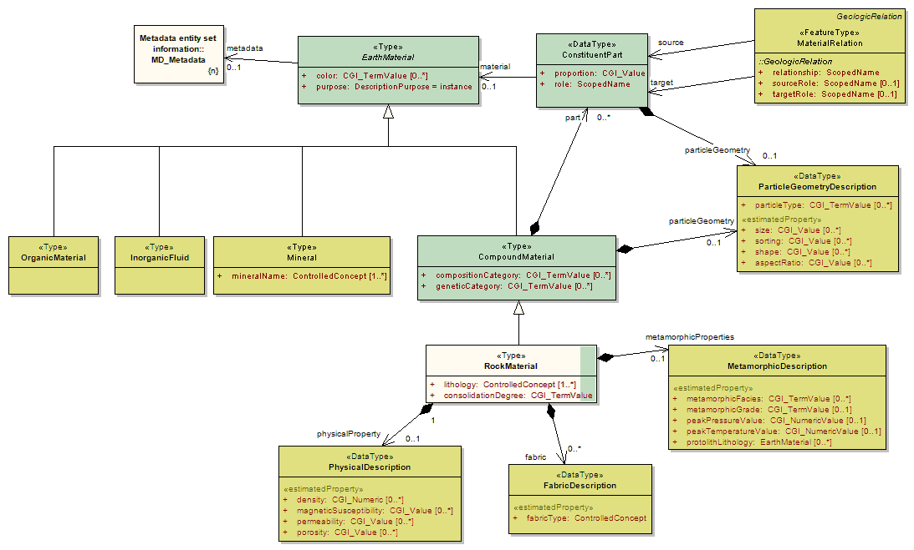
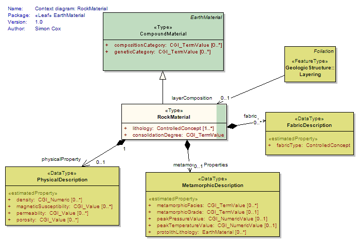
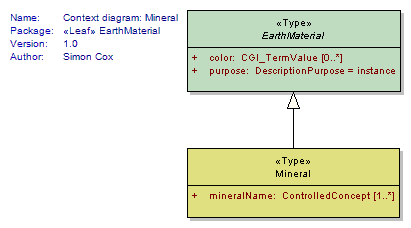
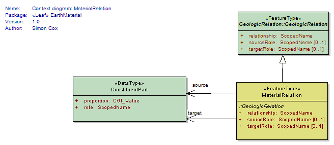
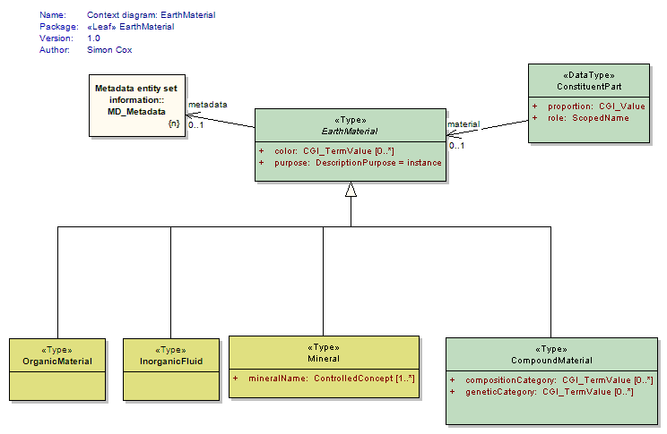
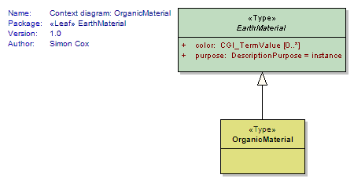

Package GeoSciML/EarthMaterial
The GeoSciML Earth Material package contains classes representing a description of a naturally occurring substance in the Earth.
Earth Material represents material composition or substance, and is thus independent of quantity or location. Ideally, Earth Materials are defined strictly based on physical properties, but because of standard geological usage, genetic interpretations may enter into the description as well.
Class Summary |
|
| <<FeatureType>> Classes | |
MaterialRelation
<<FeatureType>>
|
The concrete MaterialRelation class is a subtype of the abstract GeologicRelation class which describes the relationships between constituent parts in an Earth Material (eg: A mineral overgrowth on a phenocryst within a granite). Relationships are always binary and directional. There is always a single source and a single target. The relationship is always defined from the perspective of the Source and is generally an active verb. Example: Consider an overgrowth of albite on plagioclase in a granite. The Source would point to the albite mineral description. In this case, the Target would point to the plagioclase mineral description and the relationship attribute would be 'overgrowth' and the sourceRole is 'overgrows' and the targetRole is 'overgrown'. Other appropriate role attributes might include: crosscuts, replaces, etc. for crosscutting and replacement relationships. |
| <<Type>> Classes | |
CompoundMaterial
<<Type>>
|
An EarthMaterial composed of particles composed of EarthMaterials, possibly including other CompoundMaterials. This class is provided primarily as an extensibility point for related domain models that wish to import and build on GeoSciML, and wish to define material types that are compound but are not rock or rock-like material. For most users of GeoSciML "RockMaterial" shoudl be used. |
EarthMaterial
<<Type>>
|
The Earth Material class holds a description of a naturally occurring substance in the Earth. Earth Material represents material composition or substance, and is thus independent of quantity or location. Ideally, Earth Materials are defined strictly based on physical properties, but because of standard geological usage, genetic interpretations may enter into the description as well. |
InorganicFluid
<<Type>>
|
An inorganic, non-crystalline EarthMaterial (solid, liquid, or gas) that tends to flow or conform to the shape of its container. Includes glass. By convention liquid mercury is considered a mineral (examples: water, brine, glass) |
Mineral
<<Type>>
|
A naturally occurring inorganic element or compound having a periodically repeating arrangement of atoms and a characteristic chemical composition or range of compositions, resulting in distinctive physical properties. Includes mercury as a general exception to the requirement of crystallinity. Also includes crypto-crystalline materials such as chalcedony and amorphous silica. |
OrganicMaterial
<<Type>>
|
An EarthMaterial that belongs to the class of chemical compounds having a reduced carbon basis (as distinct from carbonates), and derived from living organisms. Includes high-carbon EarthMaterials such as bitumen, peat, and coal. |
RockMaterial
<<Type>>
|
A specialized CompoundMaterial that includes consolidated and unconsolidated materials as well as mixtures of consolidated and unconsolidated materials. |
| <<DataType>> Classes | |
ConstituentPart
<<DataType>>
|
The Constituent Part class describes how Earth Materials may be made up of other Earth Materials, including the proportion of the constituent part in the whole (eg: 20%, minor, dominant); the role that the constituent plays in the whole (eg: matrix, groundmass, framework, phenocryst, xenolith, vein); and type of particle (eg: grain, clast, crystal, fossil, oolite) The distinction between "role" and "particleType" is subtle. An operational test is that constituentType may be determined independent of relationship between particles in the aggregation, whereas role requires consideration of the relationship to other particles. A particle may be identified as clast, independent of its material composition, and independent of its relationship to other grains in a rock. The term 'floating clast' is a role, because it is dependent on the relationship 'not in contact with other clasts'. Consider Dunham's textural classification of carbonate rocks (wackestone, packstone, grainstone...) in the description of carbonate rocks. The description is predicated on identification of two kinds of intraclasts (grains) and matrix (carbonate mud), and then uses this distinction to establish relationships--mud supported vs. grain supported -- that define roles for the two types of constituents (framework, matrix...). examples of type vs. role: Particle type: clast. Role: framework, floating particle particle type: crystal. Role: matrix, pseudomatrix (in case that matrix is interpreted as recrystallized material) particle type: clast. Role: matrix (in case that matrix is interpreted as very-fine grained detrital fraction) particle type: crystal. Role: cement (in case that material insterstitial to particles is crystalline material introduced during diagenesis) particle type: crystal. Role: phenocryst (in igneous rock) particle type: microlite Role: groundmass (in porphyrytic igneous rock) particle type: crystal. Role: framework (in igneous rock) particle type: pyroclast. role: framework (in tuff) particle type: crystal Role: oikocryst particle type: crystal Role: overgrowth particle type: biogenic particle Role: floating particle particle type: ooid Role: framework |
FabricDescription
<<DataType>>
|
The FabricDescription class describes all types of fabrics associated with a CompoundMaterial (ie, tectonic, metamorphic, sedimentary, igneous fabrics or textures). It denotes a pattern, defined by one or more CompoundMaterial constituents, that is present throughout a rock body when considered at some scale. FabricDescription is defined based on the average configuration of many constituents. Penetrative fabric denotes that these constituents are distributed throughout the rock volume at the scale of observation [Passchier and Trouw, 1998], and are repeated at distances that are small relative to the scale of the whole, such that they can be considered to pervade the whole uniformly (Turner and Weiss [1963] p. 21-24; Hobbs and others [1976], p. 73; Jackson [1997]; Passchier and Trouw [1998]). FabricDescription is distinguished from Particle Geometry based on the criteria that Particle Geometry is preserved if a CompoundMaterial is disaggregated, while FabricDescription is not defined if the material is disaggregated. Use gml:description to capture any free text to indicate any specific or peculiar features of the described fabric in the CompoundMaterial. |
MetamorphicDescription
<<DataType>>
|
MetamorphicDescription describes the character of metamorphism applied to a CompoundMaterial or GeologicUnit using one or more properties including estimated intensity (grade; eg high grade, low grade), characteristic metamorphic mineral assemblages (facies; eg, greenschist, amphibolite), peak P-T estimates, and protolith material if known. |
ParticleGeometryDescription
<<DataType>>
|
ParticleGeometryDescription describes particles in a CompoundMaterial independent of their relationship to each other or orientation. It is distinguished from Fabric in that the ParticleGeometryDescription remains constant if the material is disaggregated into its constituent particles, whereas Fabric is lost if the material is disaggregated. Properties include the particle size (grainsize), particle sorting (size distribution, eg: well sorted, poorly sorted, bimodal sorting), particle shape (surface rounding or crystal face development, eg: well rounded, euhedral, anhedral), and particle aspectRatio (eg: elongated, platy, bladed, compact, acicular). |
PhysicalDescription
<<DataType>>
|
PhysicalDescription describes a limited but commonly used set of physical properties of Rocks and UnconsolidatedMaterials. This set is an incomplete subset of potential physical properties that could be used to describe rocks and unconsolidated materials. Revision/extension of this list is anticipated in future versions. |
Tagged Values |
||
| Tag | Value | Notes |
| xsdDocument | earthMaterial.xsd | Description: Relative path to XML Schema document corresponding to this package. |
UML Diagram: Context diagram: CompoundMaterial

UML Diagram: Summary diagram: Earth Material

UML Diagram: Context diagram: RockMaterial

UML Diagram: Context diagram: Mineral

UML Diagram: Context diagram: MaterialRelation

UML Diagram: Context diagram: EarthMaterial

UML Diagram: Context diagram: OrganicMaterial
